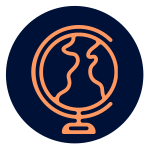
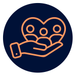
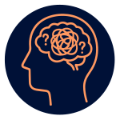

Kesenjangan Akses Geografis
Sebagian besar layanan berkualitas masih terpusat di kota besar, meninggalkan anak-anak spesial di pelosok minim dukungan profesional.
Membangun Ekosistem Tumbuh Kembang Inklusif Berbasis Hati Bagi Orang Tua & Anak.

Sebagian besar layanan berkualitas masih terpusat di kota besar, meninggalkan anak-anak spesial di pelosok minim dukungan profesional.
Biaya terapi konvensional yang tinggi, menciptakan hambatan bagi keluarga menengah ke bawah untuk mendapatkan intervensi dini yang krusial.

Setiap anak berhak atas masa depan yang mandiri melalui sistem edukasi yang inklusif, terukur, dan terjangkau bagi seluruh lapisan masyarakat, agar orang tua dapat melakukan observasi mandiri di rumah.

Orang tua mengalami kebingungan dan lelah secara emosional sehingga stimulasi anak tidak optimal serta terdapat banyak kasus pemasungan anak di daerah terpencil.
Rumah_pint.art merupakan program kelas orang tua yang berfokus pada penanganan tumbuh kembang anak secara terstruktur dan komprehensif yang dilakukan secara daring dan luring.
Menjangkau pelosok tanah air melalui layanan daring kepada orang tua tanpa batas geografis. Memastikan standar profesional yang sama bagi seluruh keluarga.
Intervensi langsung luring melalui Pop-Up Class di daerah Jabodetabek. Fokus pada stimulasi fisik, interaksi sosial, dan alat belajar terstruktur.
Pemetaan klinis komprehensif anak untuk menentukan level kemampuan:
Mengukur literasi keluarga terhadap ilmu tumbuh kembang (Tumbang) sebagai fondasi pendampingan mandiri.
Materi diberikan sesuai dengan level kemampuan anak, target yang ingin dicapai adalah orang tua dapat melakukan observasi dan menyusun homeprogram.
Sesi terjadwal 1 bulan sekali untuk memantau perkembangan anak, bertukar pengalaman, dan bedah masalah spesifik yang ditemukan orang tua di rumah.
Observasi rutin untuk menentukan kenaikan level belajar orang tua dalam menangani perkembangan anak secara nyata.
Dinyatakan selesai atau mendapatkan materi tambahan menyesuaikan kapasitas anak.
Intervensi khusus oleh Konselor atau Psikolog kepada orang tua, yang akan diaktifkan apabila anak dinilai belum mengalami perkembangan yang signifikan secara berkala.